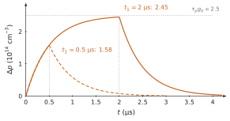
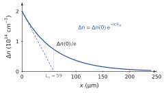
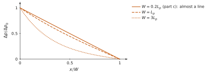
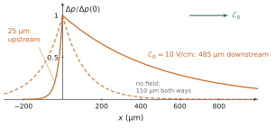

Equilibrium, steady state and transient; the excess densities Δn, Δp and the lifetime τ; the return to equilibrium e−t/τ; absorption above Eg and the generation rate g0; Case A (uniform light), Δn=τg0 and Δσ=q(μn+μp)Δn; the continuity equations with generation and recombination; the diffusion length L=Dτ; Case B (illuminated surface) and the internal field; the ambipolar coefficient Da=(n+p)/(n/Dp+p/Dn).
Data
Silicon at 300 K: ni=1010cm−3, μn=1350, μp=460 cm²/(V·s), Dn=35, Dp=12 cm²/s unless the problem gives other values; hc=1240 eV·nm. Low-level injection unless stated otherwise.
Problem 4.1The balance of a sliceA · Understanding
Adapted from Neamen, Problems 6.6 and 6.7, p. 234
In one dimension the continuity equation for holes reads ∂t∂p=−∂x∂Φp+G−R, where Φp is the hole flux.
Say in words what each term counts, for a thin slice of the sample.
In a slice, holes are generated at G=1020 and recombine at R=2×1019 cm−3s−1. What must ∂Φp/∂x be for the hole density to stay constant? Do more holes leave or enter the slice?
Repeat if the light is switched off (G=0) while R keeps its value.
Classify the following as equilibrium, steady state or transient: (i) a sample in the dark at constant temperature; (ii) a sample under constant light for a long time; (iii) the first microseconds after the light is switched on; (iv) a diode carrying a constant current.
A thin slice of the sample: what enters, what leaves, what is created and what disappears.Show the short answer
(b) +8×1019 cm−3s−1, more holes leave; (c) −2×1019 cm−3s−1, more enter; (d) equilibrium; steady state; transient; steady state.
Show the correction
(a) ∂p/∂t is the rate of change of the number of holes per unit volume in the slice. −∂Φp/∂x is what transport brings in per unit volume: flux entering on one face minus flux leaving on the other, divided by the thickness. G and R are the holes created and destroyed inside the slice per unit volume and time.
(b) Constant p means 0=−∂Φp/∂x+G−R, so ∂Φp/∂x=G−R=8×1019 cm−3s−1. The flux increases across the slice: more holes leave than enter. The slice produces a net 8×1019 holes per cm³ and per second, and transport carries them away.
(c) ∂Φp/∂x=−R=−2×1019 cm−3s−1: more holes enter than leave; transport feeds the recombination of the slice.
(d) (i) Equilibrium: no light, no current, G=R in every slice and every flux zero. (ii) Steady state: nothing changes in time, but G=R and currents may flow; the sample is not in equilibrium. (iii) Transient. (iv) Steady state: the current and the densities are constant in time, but the device is far from equilibrium.
Problem 4.2From watts of light to excess carriersB · Guided calculation
Adapted from Neamen, Problem 6.4, p. 234
A silicon sample of 1 cm² cross-section and 0.1 cm thickness absorbs uniformly 1 W of red light at 630 nm. Each absorbed photon creates one electron–hole pair.
Compute the photon energy and the number of photons absorbed per second.
Deduce the generation rate g0 per cm³ and per second.
The lifetime of the excess carriers is 10 µs. What is the steady excess density (Case A)? Is low-level injection satisfied for a doping of 1016cm−3?
What fraction of the light power is turned into heat at once, before any recombination? Explain where this energy goes.
Hint
E=hc/λ; the number of photons per second is the power divided by the energy of one photon.
(a) E=1240/630=1.97 eV =3.15×10−19 J. Photons per second: 1/3.15×10−19=3.2×1018.
(b) The volume is 0.1 cm³, and the absorption is uniform: g0=3.2×1018/0.1=3.2×1019 cm−3s−1.
(c) Δn=Δp=τg0=10−5×3.2×1019=3.2×1014cm−3. With ND=1016cm−3 the excess is 3 % of the majority density: low-level injection holds.
(d) Each photon gives 1.97 eV; the pair needs Eg=1.12 eV. The excess, 0.85 eV or 43 % of the energy, is carried by the electron and the hole as kinetic energy above the band edges, and is given to the lattice in a fraction of a picosecond by collisions: it becomes heat. This is one of the losses of a solar cell.
Problem 4.3Light on, light offB · Guided calculation
Adapted from Neamen, Problems 6.15 and 6.17, p. 235
An n-type silicon sample (ND=1016cm−3) has a hole lifetime τp=0.5 µs. At t=0 a light is switched on that generates g0=5×1020 cm−3s−1 uniformly.
Write the equation for Δp(t) while the light is on, and solve it. What is the steady value?
Find the times at which Δp reaches one quarter, one half, three quarters and 95 % of its steady value.
The light is switched off at t1=0.5 µs. Give Δp(t1) and Δp(t) for t>t1. Sketch Δp(t).
Repeat (c) for t1=2 µs. Why does the excess at the switch-off barely differ from the steady value?
(a) dΔp/dt=g0−Δp/τp with Δp(0)=0 gives Δp(t)=τpg0(1−e−t/τp). Steady value τpg0=5×10−7×5×1020=2.5×1014cm−3 (2.5 % of ND: low injection).
(b) Δp/τpg0=f gives t=−τpln(1−f): 0.288τp=0.14 µs, 0.693τp=0.35 µs, 1.386τp=0.69 µs, 3.0τp=1.50 µs. Three lifetimes are needed to come within 5 % of the steady state.
(c) Δp(t1)=2.5×1014(1−e−1)=1.58×1014cm−3. After the switch-off, dΔp/dt=−Δp/τp: Δp(t)=1.58×1014e−(t−t1)/τp. The sketch is a rising exponential up to 63 % of the steady value, then a decay with the same time constant.
(d) Δp(t1)=2.5×1014(1−e−4)=2.45×1014cm−3, then Δp=2.45×1014e−(t−t1)/τp. After four lifetimes the transient is over (98 %): the same time constant governs the rise and the fall.

Light on at t=0, off at t1: the excess rises and falls with the same time constant τp.
Problem 4.4A photoconductor switched offB · Guided calculation
Adapted from Neamen, Problem 6.14, p. 234
A silicon bar is 0.05 cm long, with cross-section 10−5 cm², doped with ND=8×1015 and NA=2×1015cm−3. A voltage of 10 V is applied along it. For t<0 the bar has been illuminated for a long time, with a uniform generation rate g0=8×1020 cm−3s−1; the light is switched off at t=0. The minority lifetime is τp=0.5 µs. Because of the compensating impurities, take μn=1200 and μp=420 cm²/(V·s).
Find n0, p0 and the excess density before t=0.
Write the current I(t) for t≥0 as a dark current plus a photocurrent, and evaluate both.
By what fraction does the light raise the current? After how long is the photocurrent below 1 % of its initial value?
The photoconductor.Hint
I=σEA with σ=q(nμn+pμp), n=n0+Δn, p=p0+Δp, Δn=Δp.
(a) n0=ND−NA=6×1015cm−3, p0=1020/6×1015=1.7×104cm−3. Before t=0, Case A: Δp=Δn=τpg0=5×10−7×8×1020=4×1014cm−3, 7 % of n0.
(b) The field is E=10/0.05=200 V/cm. For t≥0, Δn=Δp=4×1014e−t/τp, and I(t)=qAE[n0μn+Δp(t)(μn+μp)]. Dark current: 1.602×10−19×10−5×200×6×1015×1200=2.31 mA. Initial photocurrent: 1.602×10−19×10−5×200×4×1014×1620=0.21 mA. So I(t)=2.31+0.21e−t/0.5μs mA.
(c) The light raises the current by 0.21/2.31=9 %. The photocurrent falls below 1 % of its initial value when e−t/τp=0.01: t=4.6τp=2.3 µs. A measurement of this decay gives τp directly, which is the principle of the photoconductive decay measurement.
Problem 4.5Light at the end of a barB · Guided calculation
Adapted from Neamen, Problem 6.19, p. 235
A long p-type silicon bar (NA=2×1016cm−3) is illuminated at its end x=0 only, so that in steady state Δn(0)=Δp(0)=2×1014cm−3. No external field is applied and no current flows through the bar. The electron lifetime is τn=1 µs.
Write the steady-state equation for the minority excess in the dark part, x>0, and solve it. Compute Ln.
Compute the electron and hole diffusion current densities at x=0 and give their directions.
The bar is open-circuited. Show that the total current would not be zero with diffusion alone, and find the small field that restores J=0 at x=0. Which carriers carry the drift current, and why is the field small?
Light absorbed at the end of a long bar. After Neamen, Fig. P6.19, p. 235.Hint
In low injection the profile is set by the minority carriers; the majority excess follows it so that the sample stays neutral, Δp≃Δn.
(a) In the dark part, Dnd2Δn/dx2−Δn/τn=0, whose solution that vanishes far from the end is Δn=Δn(0)e−x/Ln, with Ln=Dnτn=35×10−6=5.9×10−3 cm =59 µm.
(b) Jn=qDndΔn/dx=−qDnΔn(0)/Lne−x/Ln: at x=0, −1.602×10−19×35×2×1014/5.9×10−3=−0.190 A/cm². The electrons diffuse into the bar (+x), so their current flows towards −x. The holes have the same profile, Jp=−qDpdΔp/dx=+0.065 A/cm², towards +x.
(c) Diffusion alone gives Jn+Jp=−0.125 A/cm² at x=0, not zero: electrons diffuse faster than holes and would carry negative charge into the bar. A small field builds up and drives a drift current that cancels this difference, as in Case B of the chapter. The drift current is carried by the majority holes, which are very numerous: qμpp0E=0.125 A/cm² gives E=0.125/(1.602×10−19×460×2×1016)=0.085 V/cm. Such a field changes the minority drift by only qμnΔnE≈3×10−4 A/cm², negligible against their diffusion current: the minority profile computed in (a) is unaffected.

The minority excess decays over one diffusion length; the tangent at the origin reaches zero at Ln.
Problem 4.6Injected at one face, collected at the otherC · Synthesis
Adapted from Sze & Lee, Ch. 2, Problems 17 and 18, p. 80
Excess holes are injected at the face x=0 of a thin n-type slab of thickness W and extracted at the opposite face, which holds them at equilibrium: Δp(0)=Δp0, Δp(W)=0. There is no field in the slab.
Solve the steady-state equation Dpd2Δp/dx2=Δp/τp with these conditions. Show that Δp(x)=Δp0sinh(W/Lp)sinh[(W−x)/Lp].
Compute the hole current densities at x=0 and at x=W, and show that the fraction of the injected current that reaches the far face is 1/cosh(W/Lp).
Evaluate this fraction for τp=50 µs, Dp=50 cm²/s and W=0.1 mm. Then for W=Lp and W=3Lp.
Show that for W≪Lp the profile tends to a straight line and the fraction to 1−W2/2Lp2. Where does this result reappear in the course?
Hint
The general solution is Asinh(x/Lp)+Bcosh(x/Lp); it is convenient to write it as a combination of sinh[(W−x)/Lp] and sinh(x/Lp).
(a) The function sinh[(W−x)/Lp] satisfies the equation, is zero at x=W and equals sinh(W/Lp) at x=0; dividing by this value gives the profile, which meets both conditions. The solution is unique.
(b) Jp=−qDpdΔp/dx=LpqDpΔp0sinh(W/Lp)cosh[(W−x)/Lp]. At x=0: J(0)=LpqDpΔp0coth(W/Lp); at x=W: J(W)=Lpsinh(W/Lp)qDpΔp0. The ratio is J(W)/J(0)=1/cosh(W/Lp). The difference is the holes that recombine inside the slab.
(c) Lp=50×5×10−5=0.05 cm =500 µm; W/Lp=0.2 and 1/cosh0.2=0.980: 98 % of the injected holes cross. For W=Lp: 1/cosh1=0.648; for W=3Lp: 1/cosh3=0.099.
(d) For W≪Lp, sinhu≃u, so Δp≃Δp0(W−x)/W: a straight line, as in a short region without recombination. And 1/coshu≃1−u2/2: the fraction is 1−W2/2Lp2. This is the base transport factorαT=1−WB2/2Ln2 of the bipolar transistor (Chapter 8), and the straight-line profile is that of the short diode (Chapter 6).

For a thin slab the profile is a straight line and almost all the injected holes reach the far face.
Problem 4.7Reading a decayB · Guided calculation
From the course notes, Chapter 4
In n-type silicon with n0=1016cm−3, a photoconductance measurement shows the excess falling from 1014 to 1013cm−3 in 23 µs. Find τ and the effective α. Check that low-level injection holds. How long until p is within a factor 2 of p0?
Show the short answer
Δn falls by a factor 10 in 23 µs: τ=23/ln10=10 µs. α=1/(τn0)=10−11 cm³/s. Δn/n0≤1%: low level. p=2p0 when Δn=p0: t=τln(1014/104)=230 µs.
Problem 4.8Which light is absorbed?B · Guided calculation
From the course notes, Chapter 4
Compute the cut-off wavelength λg of Si, Ge and GaAs. Which of them absorbs the light of a 1.55 µm telecom laser? A red laser pointer (650 nm)?
Show the short answer
λg=1240/Eg: Si 1.11 µm, Ge 1.88 µm, GaAs 0.87 µm. At 1.55 µm (hν=0.80 eV) only Ge absorbs (this is why Ge and InGaAs, not Si, are used for telecom detectors). At 650 nm (1.91 eV) all three absorb.
Problem 4.9Where does the energy go?B · Guided calculation
From the course notes, Chapter 4
A blue photon (450 nm) is absorbed in silicon. Compute its energy, the energy that creates the pair, and the excess. What does the excess become, and in what form does it finally leave? Which part of your answer is outside the model of the chapter?
Show the short answer
hν=1240/450=2.76 eV. The pair needs Eg=1.12 eV; the excess 1.64 eV is kinetic energy of the electron and the hole (derived from the threshold picture). Both give it to the lattice by emitting phonons and settle at the band edges: the excess becomes heat. The time this takes, about a picosecond, is an experimental fact outside the model. The remaining 1.12 eV is stored in the pair until it recombines.
Problem 4.10PhotoconductivityB · Guided calculation
From the course notes, Chapter 4
Pure silicon receives light that maintains Δn=Δp=1012cm−3 extra pairs. By what factor does its conductivity increase? Would the same light change much the conductivity of silicon doped with 1016 donors per cm³?
Show the short answer
Pure silicon: without light σi=qni(μn+μp), with light q(ni+Δn)(μn+μp): factor (1010+1012)/1010=101. Doped silicon: σ≈qNDμn=q×1016×1350; the light adds q×1012×1810, a relative change of 1.3×10−4: negligible. Photoconductors use pure or lightly doped material.
Problem 4.11Case A without the approximationB · Guided calculation
From the course notes, Chapter 4
In Case A keep the term αΔn2 and find the exact plateau from g0=α(n0+p0)Δn+αΔn2, with α=1/(τn0), τ=10 µs, n0=1016cm−3. Compare with τg0 for g0=1019 and for g0=1022 cm−3s−1. What do you conclude?
Show the short answer
α=10−11 cm³/s. The quadratic Δn2+n0Δn−g0/α=0 gives Δn=[−n0+n02+4g0/α]/2. For g0=1019: 9.90×1013, 1% below τg0=1014. For g0=1022: 2.7×1016, against τg0=1017: the linear result overestimates by a factor 3.7. The formula τg0 is valid only while τg0≪n0 (low level).
Problem 4.12Colour of an LEDB · Guided calculation
From the course notes, Chapter 4
An InGaN alloy has a gap of 2.7 eV, an AlGaInP alloy 1.95 eV. Find the emitted wavelengths and colours. Why could not silicon, even with a suitable gap, replace them?
Show the short answer
InGaN: 1240/2.7=459 nm, blue. AlGaInP: 1240/1.95=636 nm, red. Silicon has an indirect gap: even with the right gap, an electron and a hole at the band extrema have different k and recombine without emitting light, through defects.
Problem 4.13MechanismsB · Guided calculation
From the course notes, Chapter 4
n-type silicon with τSRH=50 µs, B=10−14 cm³/s, Cn=3×10−31 cm6/s. Compute the three rates and the lifetime for n0=1017 and 1019cm−3. At which doping do Auger and SRH have equal weight?
Show the short answer
SRH: 1/τSRH=2×104 s−1 at any doping. At 1017: radiative Bn0=103, Auger Cnn02=3×103; total 2.4×104 s−1, τ=42 µs (SRH dominant). At 1019: radiative 105, Auger 3×107 s−1; τ=33 ns (Auger dominant). Equal weight of Auger and SRH: Cnn02=2×104, n0=2.6×1017cm−3.
Problem 4.14Two samples, one lightB · Guided calculation
From the course notes, Chapter 4
(in the spirit of the surface-illumination problems of Neamen, ch. 6). Two n-type silicon samples are identical except for their hole lifetime: 10 µs and 0.1 µs. Both receive g0=1019 cm−3s−1 in their illuminated layer. For each, find Δp(0), Lp, Δp at 50 µm into the dark bulk, and Jp(0). By which factor does the lifetime change each quantity?
Show the short answer
τ=10 µs: Δp(0)=τg0/2=5×1013, Lp=110 µm, Δp(50μm)=5×1013e−0.456=3.2×1013cm−3, Jp(0)=qg0Lp/2=8.8 mA/cm². τ=0.1 µs: Δp(0)=5×1011, Lp=11 µm, Δp(50μm)=5×1011e−4.56=5.2×109cm−3, Jp(0)=0.88 mA/cm². A factor 100 on τ gives 100 on Δp(0), 10 on Lp and Jp(0), and about 6000 on Δp at 50 µm, where both effects combine.
Problem 4.15A conservation checkB · Guided calculation
From the course notes, Chapter 4
For the steady profile of Case B, compute (i) the number of excess holes per cm² of surface, (ii) the number recombining per cm² and per second, (iii) the hole flux entering at x=0 by diffusion. Compare (ii) and (iii), and show that both equal g0Lp/2.
Show the short answer
(i) ∫Δpdx=(τg0/2)Lp=5.5×1011 cm−2. (ii) Recombination integrated over depth: (τg0/2)Lp/τ=g0Lp/2=5.5×1016 cm−2s−1. (iii) DpΔp(0)/Lp=Dpτg0/(2Lp)=g0Lp/2=5.5×1016 cm−2s−1, because Dpτ=Lp2: what diffuses in is exactly what recombines.
Problem 4.16The internal fieldB · Guided calculation
From the course notes, Chapter 4
For the steady profile of Case B, compute E at x=0 and at x=Lp from (4.24), and the ratio of hole drift to hole diffusion current at both points. Then compute the distance μpEτ covered by drift in one lifetime in an applied field of 10 V/cm and compare it with Lp.
Show the short answer
At x=0: E≈(Dp−Dn)(−Δp(0)/Lp)/(μnn0)=7.7 mV/cm, pointing into the sample; at x=Lp the gradient is divided by e: 2.8 mV/cm. Drift/diffusion ≈(Δp/n0)(1−Dp/Dn): 0.33% at x=0, 0.12% at x=Lp. Applied 10 V/cm: μpEτ=460×10×10−5=0.046 cm =460 µm, about four times Lp: an imposed field can dominate, the internal one cannot.
Problem 4.17Challenge: the edge of the light, in steady stateB · Guided calculation
From the course notes, Chapter 4
The illuminated layer occupies x<0 (with g=g0) and is very thick; the dark bulk is x>0. Solve the steady-state form of (4.26) on both sides (bounded solutions), and match Δp and dΔp/dx at x=0. Show that Δp(0)=τg0/2, as (4.27) gives for t→∞, and sketch the whole profile.
Show the short answer
For x<0: Δp=τg0+Aex/L; for x>0: Δp=Be−x/L. Continuity of Δp: τg0+A=B; continuity of the slope (of the current): A/L=−B/L. Hence B=τg0/2, A=−τg0/2: Δp=τg0(1−21ex/L) in the light, 21τg0e−x/L in the dark. The profile is symmetric about the value τg0/2 at the edge and reaches τg0 a few L inside the light.
Problem 4.18A new situationB · Guided calculation
From the course notes, Chapter 4
Repeat the steady state of Case B for p-type silicon, NA=1016cm−3, with the same g0, Dn=35 cm²/s and τn=10 µs. No formula of the chapter is specific to n-type material: say which quantity plays which role.
Show the short answer
Swap n↔p: the minority carriers are electrons, Da→Dn, Ln=Dnτn=35×10−5=1.87×10−2 cm =187 µm, Δn(x)=(τng0/2)e−x/Ln with τng0/2=5×1013cm−3, majority holes unchanged to within 0.5%. Current at the boundary ∣Jn(0)∣=qg0Ln/2=15 mA/cm².
Problem 4.19Electrons and holesB · Guided calculation
From the course notes, Chapter 4
(i) From μn=1350 and μp=460 cm²/(V·s) find Dn and Dp at 300 K. (ii) Compute Da for n=p. (iii) In the n-type sample of Case B (n0=1016cm−3) the excess is raised to Δn=1017cm−3. Compute Da, say whether low-level injection still holds and what that does to the diffusion length.
Show the short answer
(i) D=μkT/q: Dn=1350×0.0259=35.0 and Dp=460×0.0259=11.9 cm²/s. (ii) n=p: Da=2×35×11.9/(35+11.9)=17.8 cm²/s. (iii) With n=1016+1017 and p=1017: Da=(n+p)/(n/Dp+p/Dn)=17.4 cm²/s, 46% above Dp. Low-level injection no longer holds (Δn=10n0), so the lifetime is also no longer constant (Figure 4.2) and L=Daτ loses its meaning as a fixed length.
Problem 4.20The diffusion frontB · Guided calculation
From the course notes, Chapter 4
In the sample of Case B (τ=10 µs, Dp=12 cm²/s, τg0/2=5×1013cm−3): (i) compute the edge value Δp(0,t) at t=1, 10 and 30 µs; (ii) with the edge held fixed, at what depth is the excess half its edge value at t=0.5 µs? (Use the short-time limit of (4.29) and erfc(0.477)=0.5.) (iii) After how long would pure diffusion carry the front to Lp? What do you conclude?
Show the short answer
(i) Δp(0,t)=5×1013(1−e−t/τ): 4.8×1012 at 1 µs, 3.2×1013 at 10 µs, 4.8×1013cm−3 (95%) at 30 µs. (ii) x/(2Dpt)=0.477, i.e. x=0.954Dpt=0.954×12×5×10−7 cm =23 µm, or 0.21Lp; the full solution (4.29) gives the same value, because at t=0.05τ recombination has removed almost nothing. (iii) Dpt=Lp for t=Lp2/Dp=τ=10 µs: the front would reach Lp only when recombination has removed most of the carriers. That is why it stops near Lp and why the steady state settles in a few τ.
Problem 4.21How long until the steady state?B · Guided calculation
From the course notes, Chapter 4
(i) Read from Figure 4.11b the time after which the excess at x=Lp reaches 90% of its final value, first with the edge held fixed, then for the real switch-on; give them in µs for τ=10 µs. (ii) When does the edge itself reach 90% of τg0/2? (iii) Why is the point x=Lp slower than the edge in the real switch-on? What do these times become for τ=1 µs?
Show the short answer
(i) Edge held fixed: 1.1τ=11 µs; real switch-on: 3.0τ=30 µs. (ii) 1−e−t/τ=0.9 for t=τln10=2.3τ=23 µs. (iii) The point x=Lp waits for the edge to fill and for diffusion to bring the carriers; the two delays add up. All times are proportional to τ: for τ=1 µs, 1.1 µs, 3.0 µs and 2.3 µs. A shorter lifetime gives a steady state reached sooner, but a shorter reach.
Problem 4.22Challenge: checking the erfc solutionB · Guided calculation
From the course notes, Chapter 4
Let a=x/(2Dpt), b=t/τ and Lp=Dpτ. (i) Show that T−=e−x/Lperfc(a−b) and T+=ex/Lperfc(a+b) each obey (4.28). (Use derfc(z)/dz=−(2/π)e−z2 and Dp/Lp2=1/τ.) (ii) Check that 2Δps(T−+T+) equals Δps at x=0 and 0 at t=0 for x>0. (iii) Find its limit for t→∞.
Show the short answer
(i) For T−, let z=a−b and E=e−x/Lp, with ∂z/∂x=1/(2Dpt), ∂z/∂t=−(a+b)/(2t) and γ=(2/π)e−z2. Then ∂T−/∂t=Eγ(a+b)/(2t) and ∂2T−/∂x2=T−/Lp2+Eγ/(LpDpt)+Eγz/(2Dpt). With Dp/Lp2=1/τ and Dp/(LpDpt)=b/t: Dp∂2T−/∂x2−T−/τ=Eγ[b/t+(a−b)/(2t)]=Eγ(a+b)/(2t)=∂T−/∂t. The calculation for T+ is the same with Lp→−Lp and b→−b. (ii) At x=0, a=0: 21[erfc(−b)+erfc(b)]=1. For t→0 and x>0: a→+∞, b→0, both erfc tend to 0. (iii) For t→∞: a−b→−∞ (erfc→2) and a+b→+∞ (erfc→0), hence Δp→Δpse−x/Lp, the steady profile.
Challenge: a new situation
These problems apply the method of the chapter to a device, a material or a situation that the chapter did not treat. The reasoning does not change: state the physical picture, choose the model, compute, check.
Problem 4.23Ambipolar diffusion in germaniumC · Synthesis
Adapted from Neamen, Problem 6.10, p. 234
Germanium at 300 K (ni=2.4×1013cm−3, μn=3900, μp=1900 cm²/(V·s)) is doped with ND=4×1013cm−3 donors. The excess-carrier lifetime is 2 µs.
Compute n0 and p0, without the majority-carrier approximation. Why is it not valid here?
Compute Dn, Dp and the ambipolar coefficient Da in low injection. Compare Da with Dp, which it would equal in strongly n-type material.
Compute the diffusion length of the excess carriers.
Explain physically why the excess electrons and holes diffuse together with a coefficient that lies between Dn and Dp.
(a) ND is comparable to ni, so thermal pairs are not negligible. n0=2×1013+4×1026+5.76×1026=5.12×1013cm−3, p0=ni2/n0=1.12×1013cm−3.
(b) Dn=3900×0.0259=101 cm²/s and Dp=1900×0.0259=49.2 cm²/s. In low injection n≃n0, p≃p0: Da=n0/Dp+p0/Dnn0+p0=1.04×1012+1.1×10116.24×1013=54.2 cm²/s, 10 % more than Dp. The minority carriers are not rare enough here for the majority carriers to follow them without effect.
(c) L=Daτ=54.2×2×10−6=1.04×10−2 cm =104 µm.
(d) If electrons and holes diffused independently, the faster electrons would run ahead and separate charge; the resulting field slows the electrons and speeds up the holes until both move together, keeping the excess neutral. The common coefficient weights each carrier by the density of the other: when p≪n, the many majority electrons screen at once and the pair diffuses at the speed of the minority holes, Da→Dp; when n≃p both matter, and Da→2DnDp/(Dn+Dp).
Problem 4.24Minority carriers in an applied fieldC · Synthesis
Adapted from Neamen, Problem 6.22, p. 236
In n-type silicon, holes are generated in a thin plane at x=0 and spread on both sides. A uniform field E0 is applied along +x. The hole lifetime is τp=10 µs.
Write the steady-state continuity equation for Δp with diffusion, drift and recombination, and show that it has solutions esx with s=Lp1(β±1+β2), β=2DpμpE0Lp.
Choose the root that keeps Δp finite on each side, and give the decay lengths downstream (x>0) and upstream (x<0).
Evaluate them for E0=0 and for E0=10 V/cm. Sketch the profiles.
Explain the result in terms of the distance drifted in one lifetime.
Hint
The hole flux is μpE0p−Dpdp/dx; in the n-type material the field does not change p0.
Show the short answer
(c) Lp=110 µm both ways for E0=0; for 10 V/cm, β=2.10: 485 µm downstream, 25 µm upstream.
Show the correction
(a) 0=−dxd(μpE0Δp−DpdxdΔp)−τpΔp, i.e. DpΔp′′−μpE0Δp′−Δp/τp=0. With esx: Dps2−μpE0s−1/τp=0. Dividing by Dp and using Dpτp=Lp2 and μpE0/Dp=2β/Lp: s2−(2β/Lp)s−1/Lp2=0, whose roots are s=(β±1+β2)/Lp.
(b) The root with + is positive, the one with − negative. For x>0 the solution must decay: Δp∝e−x/Ldown with 1/Ldown=(1+β2−β)/Lp. For x<0: Δp∝ex/Lup with 1/Lup=(1+β2+β)/Lp.
(c) Lp=12×10−5=110 µm. Without field, β=0 and both lengths equal Lp: a symmetric profile. With 10 V/cm, β=460×10×1.10×10−2/24=2.10 and 1+β2=2.33: Ldown=110/0.226=485 µm and Lup=110/4.43=25 µm. The profile is strongly skewed downstream.
(d) In one lifetime the holes drift μpE0τp=460×10×10−5=0.046 cm =460 µm, more than four diffusion lengths. Downstream, drift carries them far before they recombine, and Ldown≈μpE0τp when β≫1; upstream, diffusion must fight the drift and they get only a short way. This is how a field collects minority carriers, as the field of a junction does in Chapter 6.

A field stretches the profile downstream and compresses it upstream.